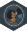

Getting help
Thank you for using OSD758!
If you have a GitHub account, please file an issue with your question or bug report.
If you do not have a GitHub account, you can contact Ramiro Magno, the maintainer of this package at rmagno@pattern.institute.
If your question pertains more directly to the original dataset OSD-758 obtained from the Open Science Data Repository please reach out to the original authors. Contact: Xiao Wen Mao xmao@llu.edu.